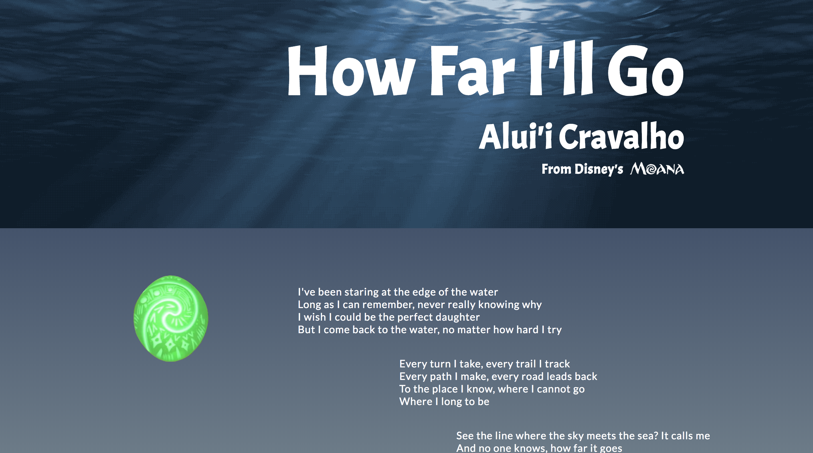
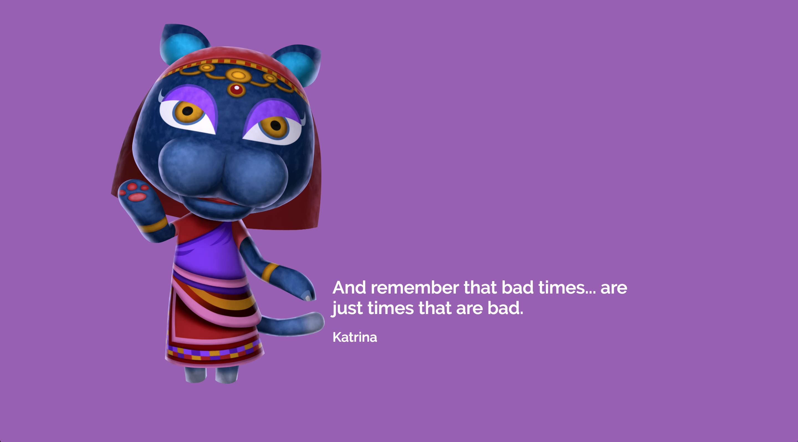

Katie Heider
Interaction Foundations Portfolio FL17

A lyric sheet for How Far I'll Go from Moana

Responsive postcards of Animal Crossing characters that can be viewed on a phone or desktop
Microsite designed with creative direction from Kimball Slade featuring Grimm's fairy tales
Microsite about Cryptids that was built by Rhea Khanna with my creative direction